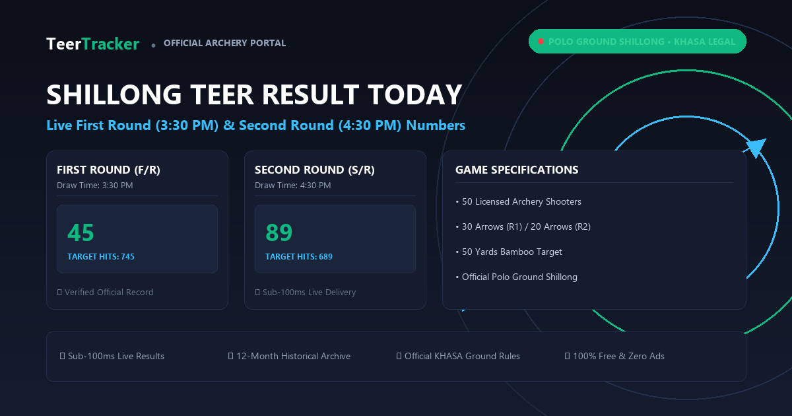

Khanapara Teer Full Board →
Guwahati, Assam Border • F/R 4:10 PM | S/R 4:45 PM
F/R (04:10 PM)
06
S/R (04:45 PM)
74
2026-11-09 • Polo Grounds, Shillong, Meghalaya
Official First Round (3:30 PM) and Second Round (4:30 PM) numbers declared at Polo Ground on the preceding draw date (06 Nov 2026):
For full month-by-month historical numbers dating back to 2020, visit the complete Shillong Teer Previous Results Chart.
Guwahati, Assam Border • F/R 4:10 PM | S/R 4:45 PM
Jaintia Hills, Meghalaya • F/R 2:30 PM | S/R 3:10 PM
Daily shooting start times and official declaration windows across Meghalaya, Assam, and border archery ranges:
| Game Name | Range / Ground Location | First Round (FR) | Second Round (SR) | Operating Days |
|---|---|---|---|---|
| Shillong Arrow (Shillong Teer) | Polo Ground, Shillong | 3:45 PM (Shooting 3:30 PM) | 4:45 PM (Shooting 4:30 PM) | Mon – Sat |
| Khanapara Teer (Assam Teer) | Khanapara / Ri-Bhoi Border | 4:15 PM (Shooting 4:10 PM) | 5:00 PM (Shooting 4:45 PM) | Mon – Sat |
| Juwai Arrow (Juwai Teer) | Jowai, West Jaintia Hills | 2:15 PM (Declared 2:30 PM) | 3:00 PM (Declared 3:10 PM) | Mon – Sat |
| Bhutan Arrow (Bhutan Teer) | Samdrup Jongkhar / Border | 4:10 PM | 4:40 PM | Mon – Sat |
| Shillong Morning Teer | Polo Commercial Range | 10:30 AM | 11:30 AM | Mon – Sat |
| Khanapara Morning Teer | Khanapara Early Range | 10:30 AM | 11:30 AM | Mon – Sat |
| Knight Arrow (Night Teer) | Shillong Night Range | 8:30 PM / 10:30 PM | 9:30 PM / 11:30 PM | Mon – Sat |
| Jowai Ladrymbai Arrow | East Jaintia Hills Range | 4:45 PM (Round 1) | 4:50 PM (Round 2) | Mon – Sat |

Access our complete suite of verified archery tools, common target formulas, official historical archives, and calendar schedules:
Checking a daily archery result requires verifying physical shooting data against official Khasi Hills Archery Sports Association logs:
| Game Name | Location | First Round (F/R) | Second Round (S/R) | Status |
|---|---|---|---|---|
| Shillong Teer | Polo Ground, Shillong | 25 (3:30 PM) | 47 (4:30 PM) | Confirmed |
| Khanapara Teer | Ri-Bhoi / Guwahati Border | 06 (4:10 PM) | 74 (4:45 PM) | Confirmed |
| Juwai Teer | Jaintia Hills Range | 16 (2:30 PM) | 43 (3:10 PM) | Confirmed |
| Shillong Morning | Polo Club Track | 36 (10:30 AM) | 28 (11:30 AM) | Confirmed |
Shillong Teer is a traditional archery sports game conducted by the Khasi Hills Archery Sports Association (KHASA), an umbrella group comprising 12 distinct Khasi archery clubs. The game is held every afternoon at the Polo Ground in Shillong from Monday to Saturday.
Each shooting session follows strict mechanical parameters under Meghalaya state law:
For example, if the first round arrow tally is 825, the winning result is 25. If the second round tally is 647, the winning result is 47.
Teer players utilize mathematical groupings to predict outcomes. Every two-digit result from 00 to 99 breaks down into two structural components:
| Component | Digit Position | Example (Winning No: 47) | Target Pairs Covered |
|---|---|---|---|
| House | Tens Digit (First Digit) | 4 (House 4) | 40, 41, 42, 43, 44, 45, 46, 47, 48, 49 |
| Ending | Units Digit (Second Digit) | 7 (Ending 7) | 07, 17, 27, 37, 47, 57, 67, 77, 87, 97 |
Targeting a House covers 10 potential combinations, offering lower variance compared to a single direct number pick. Visit our Shillong Teer Common Numbers page for daily algorithmic House and Ending targets.
Authorized counters licensed under the Meghalaya Amusement and Betting Tax Act follow fixed commercial return ratios for verified winning tickets:
| Bet Category | Target Selected | Typical Payout Ratio | Net Return on ₹10 Ticket |
|---|---|---|---|
| Single Round Direct | Exact 2-digit number on F/R or S/R | 80 : 1 | ₹800 |
| House Selection | Single tens-digit group (10 numbers) | 8 : 1 | ₹80 |
| Ending Selection | Single units-digit group (10 numbers) | 8 : 1 | ₹80 |
| Forecast / Pair | Both F/R and S/R numbers correct | 4,000 : 1 | ₹40,000 |
Note: Payout rates are set by licensed counter associations across Meghalaya. Rates vary slightly between physical counters and regional clubs.
Known regionally as Teer Khela across Assam, West Bengal, and the northeastern border regions, Shillong Teer represents an indigenous Khasi archery sport administered by the Khasi Hills Archery Sports Association (KHASA).
Official Live Video Notice: Participants frequently search for Shillong Teer result online, but there is no official television broadcast or sanctioned internet live video stream of the arrow shooting from Polo Ground. Physical arrow counting is conducted on-field by sworn club marshals, after which accredited scorekeepers verify and publish numbers directly to the official registry.
Local folklore connects dream symbols to numerical ranges. While not a mathematical certainty, many players reference traditional dream charts to pick direct numbers:
| Dream Symbol | Associated Direct Numbers | Common House Group |
|---|---|---|
| Snake (Saanp) | 07, 09, 17, 37 | House 0, House 3 |
| Water / River (Paani) | 04, 05, 54, 84 | House 5, House 8 |
| Fire (Aag) | 00, 01, 10, 60 | House 0, House 6 |
| Money / Coins (Paisa) | 20, 25, 50, 75 | House 2, House 5 |
| Fish (Machli) | 19, 29, 39, 49 | Ending 9 Group |
Unlike standard Indian states where lotteries and gambling face broad bans, archery betting in Meghalaya is formally recognized as a cultural sport. The practice was legalized under the Meghalaya Amusements and Betting Tax Act 1982 (Amendment Section 14A).
The state government issues official licenses to authorized counter vendors, collecting tax revenue while safeguarding traditional Khasi archery craftsmanship and athletic training.
The First Round is declared at 3:30 PM IST, and the Second Round is declared at 4:30 PM IST, Monday through Saturday. Sunday is an official holiday.
You can check month-by-month and year-by-year archives dating back to 2017 on our Teer Previous Results Archive.
Shillong Teer takes place at Polo Grounds in Shillong, Meghalaya. Khanapara Teer takes place near the Assam border in Guwahati and draws at 4:10 PM and 4:45 PM. Both follow the same 50-archer scoring mechanics.
No. Common numbers are statistical estimates derived from historical frequency charts, previous day sums, and club formulas. No numerical target is ever 100% guaranteed.
Check our dedicated Juwai Teer Result and Bhutan Teer Result trackers for live round updates.
The official Shillong Teer result yesterday was First Round: 81 (3:30 PM) and Second Round: 72 (4:30 PM). Complete daily logs are available in our Previous Results Archive.
No. KHASA does not broadcast a live video stream. Target shooting and counting at Polo Ground are open to on-site spectators and accredited marshals, and scores are published immediately following official tabulation.
No. All archery rounds including Morning Teer, Day Teer, and Night Teer are closed on Sundays throughout Meghalaya.